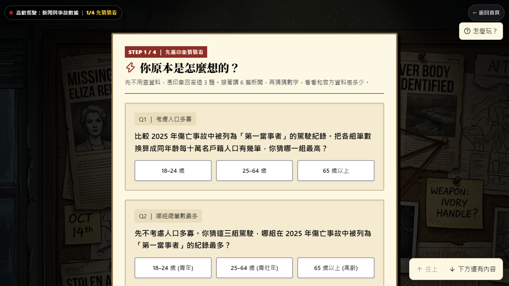
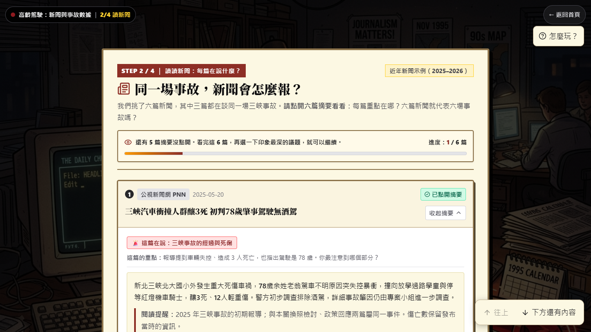
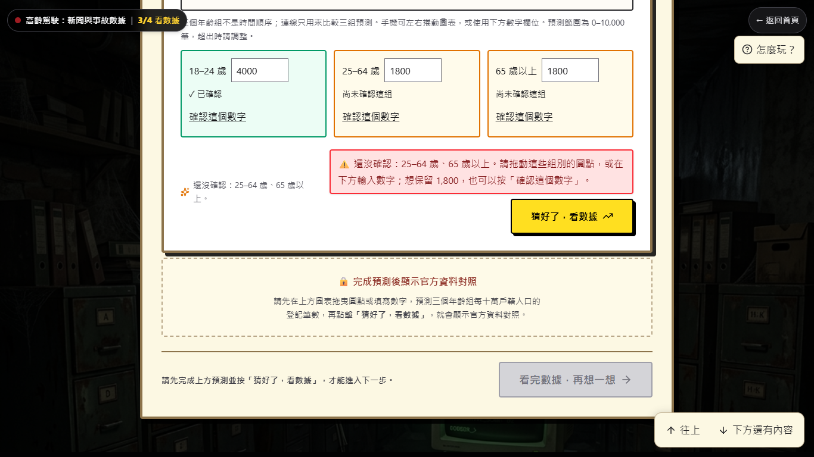
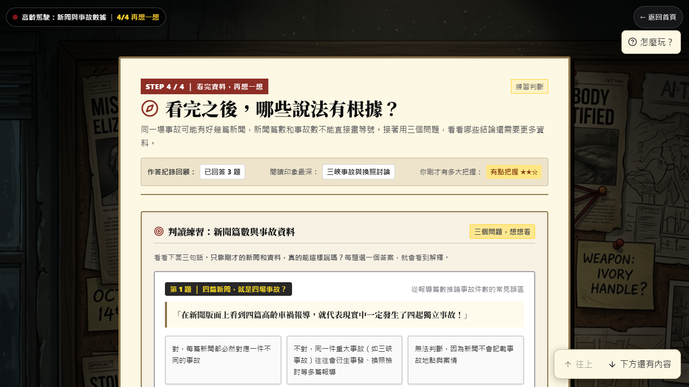

當熱新聞遇上冷數據 操作手冊
選一個題目，先憑印象回答，再讀新聞、猜數字、看資料，最後想想哪些說法有根據。以下以高齡駕駛題示範。
1 選題並憑印象回答
在首頁選分類，按「開始這一題」。回答三個問題，再選一下你對答案有多大把握。完成後按「答好了，來讀新聞」。

2 瀏覽新聞標題
瀏覽六篇相關新聞標題；想確認原報導，可以點「看新聞原文」。看完後選一下印象最深的議題，再繼續。
同一場事故可能有多篇追蹤報導；六篇新聞不一定代表六場事故。

3 猜數字 再看資料
高齡駕駛題：拖動圖上的三個圓點，或在下方輸入三組數字。想保留目前的數字，也可以按該組的「確認這個數字」。三組都確認後，按「猜好了，看數據」。
如果漏了一組，提示會列出還沒確認的年齡組。輸入 0 也算有效預測；預測不計分。

這題只算警方在傷亡事故中列為「第一當事者」的駕駛紀錄。第一當事者不等於最後認定的肇事者。換算用的是同年齡戶籍人口，不能直接當成每位駕駛的事故機率。
其他題目：折線圖已提供第一年，最後一年必須預測，中間年份可以逐年點畫，也可以留白。長條圖按類別預測；百分比圖的最後一類可能會自動補足到 100%。暴力犯罪題則用拉桿選件數。各題的畫面都會交代操作方式。
4 再想一想
看完數據，按「看完數據，再想一想」。每題選一個判斷，再讀讀解釋。最後可以回去選別題，或再玩一次。

完整操作示範
沒有旁白，可暫停畫面，對照上面的步驟。
遇到卡住時
- 無法進入下一步：看看畫面的提示，是否還有題目、把握度或閱讀後想法未完成。
- 字還是太小：可用瀏覽器縮放；Windows 按 Ctrl 和 + 放大，Ctrl 和 0 恢復。
- 內容很長：右下角有「往上」和「下方還有內容」。圖表或表格過寬時可左右滑動。
- 不知道怎麼操作：每個畫面右上方都能開啟「怎麼玩？」。
介面版本：2026 年 10 月 13 日。新聞卡片保留原報導的標題、日期與原文連結。